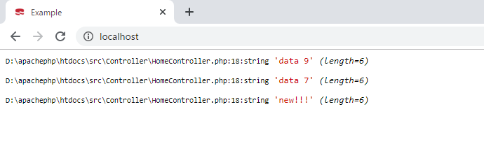
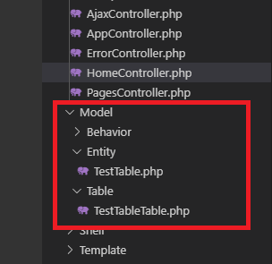
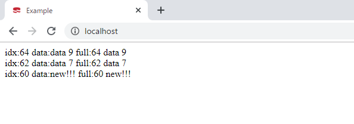
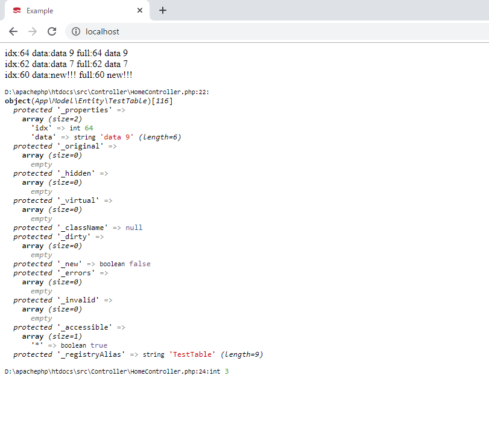

[CakePHP] Cakeフレームワークでデータベースに接続する時に使うQuery式とEntityクラス、Tableクラス、ResultSet
こんにちは。明月です。
この投稿はPHPのCakeフレームワークでデータベースに接続する時に使うQuery式とEntityクラス、Tableクラス、ResultSetに関する説明です。
以前にCakeフレームワークでデータベースを接続する方法に関して説明しました。
link - [CakePHP] データベース(MariaDB(Mysql))を接続する方法
CakePHPにはORMフレームワークが含めているので簡単にデータベースに接続するしクエリを構成してデータを検索することができます。
CakePHPのORMはデータを取得する時に単純にSQLクエリじゃなく、Query式という関数があります。それでStringタイプのクエリじゃなく、PHP言語の関数みたいにクエリを組立てすることができます。
// テーブルレジストリを取得する。
$table = TableRegistry::get('テーブル名');
// Query式を生成する。
$query = $table->find();
// Query式を組立てする。
$query = $query->select(['カラム名'])
->where(['カラム名 >=' => 条件])
->order(['カラム名' => 'DESC']);
// 結果をリストタイプに取得する。
$result = $query->toList();
上の例をみればC#のLinq式とJavaのStream式とすごく似てます。
<?php
namespace App\Controller;
use Cake\ORM\TableRegistry;
class HomeController extends AppController {
public function index() {
// testtableテーブルのレジストリを取得する。
$table = TableRegistry::get('testtable');
// Query式を生成する。
$query = $table->find();
// idxが60以上でdataカラムを降順に取得する。
$query = $query->select(['data'])
->where(['idx >=' => 60])
->order(['idx' => 'DESC']);
// 結果をリストで取得する。
$result = $query->toList();
// var_dumpで画面に表示する。
foreach($result as $item) {
var_dump($item->data);
}
}
}

ここまでは以前の投稿にも説明しました。
差があるといえば以前は$connection->newQuery()関数でQuery式を取得しましたが、今回はTableRegistryからレジストリを取得してfind関数でQuery式を取得しました。
connectionのnewQueryとTableRegistry:getしてfind関数で取得することは文法は別に差がなさそうですが、実際にnewQueryはSQLクエリを組立てするために関数ならレジストリから取得したことはORM上でデータをオブジェクト化することです。
単純にみてもnewQueryはコネクションのオブジェクトで扱うことなのでリソース管理をみても良くないでしょう。
そうするとデータをオブジェクトにするようにTableクラスとEntityクラスを作成します。
IDEのDirectory ExplorerをみればModelのフォルダの中にEntityフォルダとTableフォルダがあることを確認できます。

クラス名は「テーブル名+Table」になります。私の場合はテーブル名が「testtable」なので「TestTableTable」という可笑しい命名になりました。
クラス名は必ず「テーブル名+Table」という命名方法に従う必要はありませんが、必ず語尾に「Table」は付けなければならないです。
<?php
namespace App\Model\Table;
use Cake\ORM\Table;
class TestTableTable extends Table {
public function initialize(array $config) {
// データベースのテーブルを設定
$this->table('testtable');
// 基本キー設定
$this->primaryKey('idx');
// 連結するEntityクラス
$this->entityClass('App\Model\Entity\TestTable');
}
}
そしてEntityクラスをEntityフォルダに作成します。Entityクラスはテーブル名のままになります。
<?php
namespace App\Model\Entity;
use Cake\ORM\Entity;
class TestTable extends Entity {
// プロパティfull_dataを設定する。読み込み専用だ。
protected function _getFullData() {
return $this->idx . ' ' . $this->data;
}
}
他の言語の場合はカラムによって変数があるし、getter setterのプロパティがあります。PHPの場合は変数やgetter setterプロパティを宣言しなくてもただカラム名で取得ができます。
上の例はテーブルにfull_dataというカラムは無いですが、full_dataのプロパティにidxとdataのデータが出力するように作成しました。
<?php
namespace App\Controller;
use Cake\ORM\TableRegistry;
class HomeController extends AppController {
public function index() {
// Tableクラスを取得する。(Table語尾は外す)、つまり、TestTableTableのクラス名がTable語尾が外したTestTableで宣言する。
$table = TableRegistry::get('TestTable');
// Query式を取得する。
$query = $table->find();
// idxが60以上でidxの降順にQueryを組立てします。
$query = $query->where(['idx >=' => 60])
->order(['idx' => 'DESC']);
// リストタイプに取得する。
$result = $query->toList();
// entityによく取得したかfull_dataのプロパティを出力する。
foreach($result as $item) {
// 出力
echo 'idx:'. $item->idx . ' data:' . $item->data . ' full:'.$item->full_data;
echo '<br />';
}
}
}

Query式でデータベースからデータを取得して$result変数に入れました。$resultを$item変数にイタレーションして結果を画面によく出力しました。
上のEntityクラスに宣言したfull_dataプロパティもよく出力されました。
今までQuery式で取得する関数でtoList()関数を使いましたが、first関数を使えば一つのレコード取得もできます。
結果が一つならtoListではなくfirst関数で取得すればソースを綺麗に作成できるでしょう。
<?php
namespace App\Controller;
use Cake\ORM\TableRegistry;
class HomeController extends AppController {
public function index() {
// レジストリを取得する。
$table = TableRegistry::get('TestTable');
// Query式を取得する。
$query = $table->find();
// idxが60以上でidxの降順にQueryを組立てします。
$query = $query->where(['idx >=' => 60])
->order(['idx' => 'DESC']);
// データベースからデータを取得する。
$result = $query->toList();
// 画面に出力する。
foreach($result as $item) {
echo 'idx:'. $item->idx . ' data:' . $item->data . ' full:'.$item->full_data;
echo '<br />';
}
// データベースからデータを一つ取得する。
$item = $query->first();
// 画面に出力する。
var_dump($item);
// データの個数を出力する。
var_dump($query->count());
}
}

データ取得関数は様々がありますが、実際によく使うのは「toList」、「first」、「count」関数です。
link - https://book.cakephp.org/3.0/ja/orm/query-builder.html
link - https://book.cakephp.org/3.0/ja/orm/table-objects.html
link - https://book.cakephp.org/3.0/ja/orm/entities.html
link - https://book.cakephp.org/3.0/ja/orm/retrieving-data-and-resultsets.html
ここまでPHPのCakeフレームワークでデータベースに接続する時に使うQuery式とEntityクラス、Tableクラス、ResultSetに関する説明でした。
ご不明なところや間違いところがあればコメントしてください。
- [CakePHP] Errorページを設定する方法2020/02/20 03:00:00
- [CakePHP] Transactionを使う方法とEntityクラスを利用してInsert、Update、Deleteする方法2020/02/19 03:00:00
- [CakePHP] ORMのテーブルFetch設定2020/02/18 03:00:00
- [CakePHP] Cakeフレームワークでデータベースに接続する時に使うQuery式とEntityクラス、Tableクラス、ResultSet2020/02/17 08:16:23
- [CakePHP] データベース(MariaDB(Mysql))を接続する方法2020/02/14 03:00:00
- [PHP] namespaceとuse2020/02/13 03:00:00
- [CakePHP] RequestとResponseに関して2020/02/12 03:00:02
- [CakePHP] PHPのCakeからAjax要請がある時、jsonタイプ(json_encode関数)でResponseする方法とControllerでViewを選択する方法2020/02/08 03:00:00
- [CakePHP] MVCフレームワークのCakeをインストールする方法2020/02/07 03:00:02
- [PHP] 自動require及びincludeをする方法(spl_autoload_register)2020/02/05 03:00:00
- [PHP] 匿名関数(ラムダ式)とクロージャ(closure)2020/02/04 03:00:00
- [C#] 46. データベース(MSSQL)に接続する方法2021/10/07 18:39:58
- [C#] 45. ネットワークソケット通信(Socket)を使い方2021/10/06 19:06:25
- [C#] 44. ファイル(FileInfo)とディレクトリ(DirectoryInfo)を扱い2021/10/05 19:29:34
- [C#] 43. ストリーム(Stream)とバイナリ(byte[])、エンコード(Encoding)、そしてusingを使い方とIDisposableインターフェース2021/10/04 18:33:04
- [C#] 42. ファイルを扱い(IO)とファイルメタデータ(FileInfo)を使い方2021/10/01 20:10:21
- [C#] 41. Taskクラスとasync、awaitを使い方2021/10/01 18:59:14
- [Javascript ] WebのFull calendar(スケジュールカレンダー)の使い方法2021/07/15 21:35:36
- [Java] 56. Web serviceのサーブレット(Servlet)で初期化作業(properties設定)2021/07/02 17:10:36
- [Java] 55. Spring frameworkに文字化けを解決する方法(Encoding設定)2021/06/30 16:37:16
- [Java] 54. Spring frameworkでWeb filterを使う方法2021/06/29 18:25:12
- [Java] 53. ウェブサービス(Web service)でエラーページを処理する方法2021/06/25 13:35:54
- [Design pattern] 1-3. ファクトリメソッドパターン(Factory method pattern)2021/06/23 19:45:37
- [Java] WebSocketでチャット履歴をローディングする方法2021/06/15 18:34:45
- [Java] WebSocketを利用してユーザ(サイト運用者)が他のユーザとチャットする方法2021/06/15 17:20:08
- [Design pattern] 1-2. ビルダーパターン(Builder pattern)2021/06/11 19:06:28